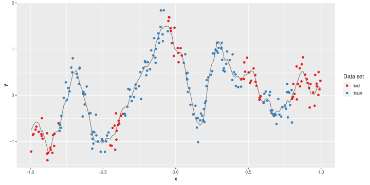
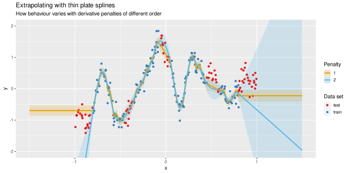
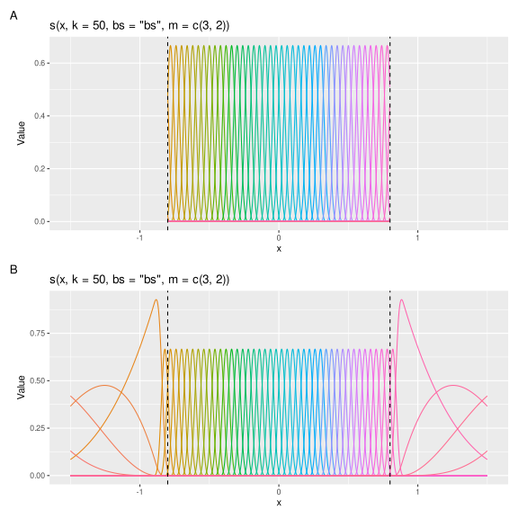
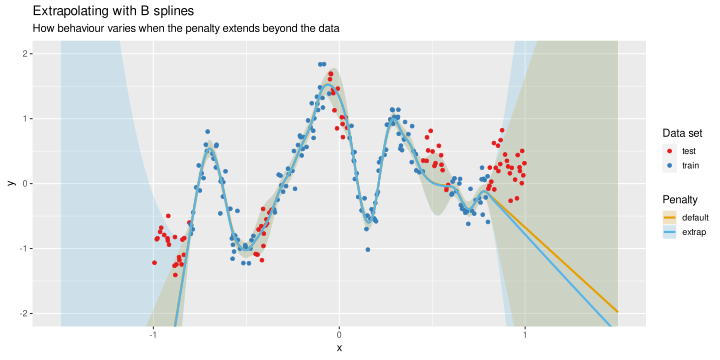
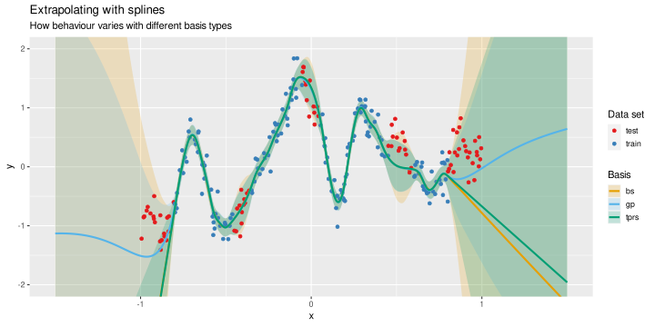
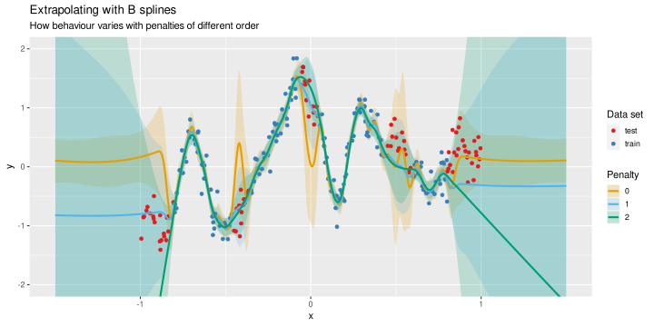
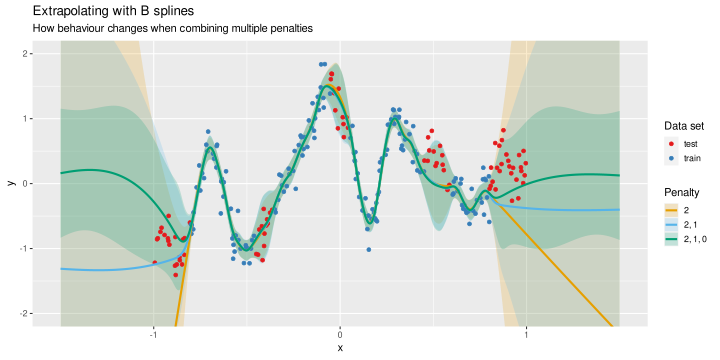

Extrapolating with B splines and GAMs
An issue that often crops up when modelling with generlaized additive models (GAMs), especially with time series or spatial data, is how to extrapolate beyond the range of the data used to train the model? The issue arises because GAMs use splines to learn from the data using basis functions. The splines themselves are built from basis functions that are typically setup in terms of the data used to fit the model. If there are no basis functions beyond the range of the input data, what exactly is being used if we want to extrapolate? A related issue is that of the wiggliness penalty; depending on the type of basis used, the penalty could extend over the entire real line (-∞–∞), or only over the range of the input data. In this post I want to take a practical look the extrapolation behaviour of splines in GAMs fitted with the mgcv package for R. In particular I want to illustrate how flexible the B spline basis is.
A lot of what I discuss in the post draws heavily on the help page in mgcv for the B spline basis — ?mgcv::b.spline — and a recent email discussion with Alex Hayes, Dave Miller, and Eric Pedersen, though what I write here reflects my own input to that discussion.
I was initially minded to look into this again after reading a new preprint on low-rank approximations to a Gaussian process [GP; Riutort-Mayol et al. (2020)], where, among other things, the authors compare the behaviour of the exact GP model with their low-rank version and with a thin plate regression spline (TPRS). The TPRS is the sort of thing you’d get by default with mgcv and s(), but as the other models were all fully Bayesian, the TPRS model was fitted using brm() from the brms package so that all the models were comparable, ultimately being fitted in Stan. The TPRS model didn’t do a very good job of fitting the test observations when extrapolating beyond the limits of the data. I wondered if we could do any better with the B spline basis in mgcv as I knew it had extra flexibility for short extrapolation beyond the data, but I’d never really looked into how it worked or what the respective behaviour was.
If you want to recreate elements of the rest of the post, you’ll need the following packages installed:
## Packages
library('ggplot2')
library('tibble')
library('tidyr')
library('dplyr')
library('mgcv')
library('gratia')
library('patchwork')
## remotes::install_github("clauswilke/colorblindr")
library('colorblindr')
## remotes::install_github("clauswilke/relayer")
library('relayer')The last two are used for plotting and the relayer package in particular is needed as I’m going to be using two separate colour scales on the plots. If you don’t have these installed, you can install them using the remotes package and the code in commented lines above.
The example data set used in the comparsion had been posted to the preprint’s GitHub repo, so it was easy to grab them and start playing with. To load the data into R we can use
load(url("https://bit.ly/gprocdata"))
ls()[1] "f_true"
where the Bitly short link just links to the .Rdata file stored on GitHub. This creates an object, f_true, in the workspace. We’ll look at the true function in a minute. Following the preprint, a data set of noisy observations is simulated from the true function by adding Gaussian noise (μ = 0, σ = 0.2)
seed <- 1234
set.seed(seed)
gp_data <- tibble(truth = unname(f_true), x = seq(-1, 1, by = 0.002)) %>%
mutate(y = truth + rnorm(length(truth), 0, 0.2))From that noisy set, we sample 250 observations at random, and indicate some of the observations as being in a test set that we won’t use when fitting GAMs
set.seed(seed)
r_samp <- sample_n(gp_data, size = 250) %>%
arrange(x) %>%
mutate(data_set = case_when(x < -0.8 ~ "test",
x > 0.8 ~ "test",
x > -0.45 & x < -0.36 ~ "test",
x > -0.05 & x < 0.05 ~ "test",
x > 0.45 & x < 0.6 ~ "test",
TRUE ~ "train"))Finally we visualize the true function and the noisy observations we sampled from it
ggplot(r_samp, aes(x = x, y = y, colour = data_set)) +
geom_line(aes(y = truth, colour = NULL), show.legend = FALSE, alpha = 0.5) +
geom_point() +
scale_colour_brewer(palette = "Set1", name = "Data set")
The red points are the test observations and will be used to look at the behaviour of the splines under interpolating and extrapolating conditions.
Thin Plate splines
Firstly, we’ll look at how the thin plate splines behave under extrapolation, recreating the behaviour from the preprint. I start by fitting two GAMs where we use 50 basis functions (k = 50) from the TPRS basis (bs = "tp"). The argument m controls the order of the derivative penalty; the default is m = 2, for a second derivative penalty (penalising the curvature fo the spline). For the second model, we use m = 1, indicating a penalty on the first derivative of the TPRS, which penalises deviations from a flat function. Note that we filter the sample of noisy data to include only the training observations.
m_tprs2 <- gam(y ~ s(x, k = 50, bs = "tp", m = 2),
data = filter(r_samp, data_set == "train"), method = "REML")
## first order penalty
m_tprs1 <- gam(y ~ s(x, k = 50, bs = "tp", m = 1),
data = filter(r_samp, data_set == "train"), method = "REML")I won’t worry about looking at model diagnostics in this post, and instead skip to the looking at how these two models behave when we predict beyond the limits of the training data.
Next I define some new observations to predict at from the two models
new_data <- tibble(x = seq(-1.5, 1.5, by = 0.002))Remember the training data covered the interval -0.8–0.8, so we’re extrapolating quite far proportionally from the support of the training data. Now we can predict from the two models
p_tprs2 <- as_tibble(predict(m_tprs2, new_data, se.fit = TRUE)) %>%
rename(fit_tprs_2 = fit, se_tprs_2 = se.fit)
p_tprs1 <- as_tibble(predict(m_tprs1, new_data, se.fit = TRUE)) %>%
rename(fit_tprs_1 = fit, se_tprs_1 = se.fit)Note we have named the two columns of data with some information that we’ll need for plotting, so the underscores are important.
Next we do some data wrangling to get the predictions into a tidy format suitable for plotting
crit <- qnorm((1 - 0.89) / 2, lower.tail = FALSE)
new_data_tprs <- bind_cols(new_data, p_tprs2, p_tprs1) %>%
pivot_longer(fit_tprs_2:se_tprs_1, names_sep = '_',
names_to = c('variable', 'spline', 'order')) %>%
pivot_wider(names_from = variable, values_from = value) %>%
mutate(upr_ci = fit + (crit * se), lwr_ci = fit - (crit * se))The basic idea here is that we cast the data to a very general long-and-thin version and pull out variables indicating the type of value (fit = fitted and se = standard error), the type of spline, and the order of the penalty, by splitting on the underscore in each of the input columns. Then we cast the long-and-thin data frame to a slightly wider version where we have access to the fit and se variables, before calculating a 89% credible interval on the predicted values.
Now we can plot the data plus the predicted values
ggplot(mapping = aes(x = x, y = y)) +
geom_ribbon(data = new_data_tprs,
mapping = aes(ymin = lwr_ci, ymax = upr_ci, x = x,
fill = order),
inherit.aes = FALSE, alpha = 0.2) +
geom_point(data = r_samp, aes(colour = data_set)) +
geom_line(data = new_data_tprs, aes(y = fit, x = x, colour2 = order),
size = 1) %>%
rename_geom_aes(new_aes = c("colour" = "colour2")) +
scale_colour_brewer(palette = "Set1", aesthetics = "colour",
name = "Data set") +
scale_colour_OkabeIto(aesthetics = "colour2", name = "Penalty") +
scale_fill_OkabeIto(name = "Penalty") +
coord_cartesian(ylim = c(-2, 2)) +
labs(title = "Extrapolating with thin plate splines",
subtitle = "How behaviour varies with derivative penalties of different order")
With the default, second derivative penalty we see that under extrapolation, the spline exhibits linear behaviour. For the first deriavtive penalty model, the behaviour is to predict a constant value. The credible intervals are also unrealistically narrow in the case of the TPRS model with the first derivative penalty. Neither does a particularly good job of estimating any of the test samples outside the range of x in the training data. The models do better when interpolating, except for the section around x = 0.5.
B splines
OK. What about B splines? With the B spline constructor in mgcv we have a lot of control over how we set up the basis and the wiggliness penalty. We’ll look at more of these options later, but first, we’ll look at the default behaviour where the penalty only operates over the range of the training observations.
m_bs_default <- gam(y ~ s(x, k = 50, bs = "bs", m = c(3, 2)),
data = filter(r_samp, data_set == "train"), method = "REML")Warning in smooth.construct.bs.smooth.spec(object, dk$data, dk$knots): there is
*no* information about some basis coefficients
Here we asked for a cubic B spline with a second order penalty — this is your common or garden cubic B spline where the wigglines penalty over covers the range of x in the training data. Ignore the warning; this is just because we have many functions and some aren’t supported by any of the data because of the holes due to the test observations.
If we want to have the penalty extend some way beyond the range of x, we need to pass in a set of end points over which knots will be defined. We need to specify the two extreme end points that enclose the region we want to predict over, and two interior knots that cover the range of the data, plus a little. We specify these knots below
knots <- list(x = c(-2, -0.9, 0.9, 2))and then pass knots to the knots argument when fitting the model
m_bs_extrap <- gam(y ~ s(x, k = 50, bs = "bs", m = c(3, 2)), method = "REML",
data = filter(r_samp, data_set == "train"), knots = knots)Warning in smooth.construct.bs.smooth.spec(object, dk$data, dk$knots): there is
*no* information about some basis coefficients
The only difference here is how we have specified we want the penalty to extend away from the limits of the training observations. You’ll get another warning here. This will always happen when you set outer knots beyond the range of the data; it is harmless.
We can visualize the differences in the bases using basis() from the gratia package
bs_default <- basis(s(x, k = 50, bs = "bs", m = c(3, 2)), knots = knots,
data = filter(new_data, x >= -0.8 & x <= 0.8))
bs_extrap <- basis(s(x, k = 50, bs = "bs", m = c(3, 2)), knots = knots,
data = new_data)
lims <- lims(x = c(-1.5, 1.5))
vlines <- geom_vline(data = tibble(x = c(-0.8, 0.8)),
aes(xintercept = x), lty = "dashed")
(draw(bs_default) + lims + vlines) / (draw(bs_extrap) + lims + vlines) +
plot_annotation(tag_levels = 'A')
Technically, the basis functions in the top panel would extend a little into the prediction region, but basis() can’t yet handle using one data set to set up the basis and another at which to evaluate it. Because we have basis functions extending over the interval for prediction, the wiggliness penalty can apply in this region too.
Now we predict from both the models as before and repeat the data wrangling
p_bs_default <- as_tibble(predict(m_bs_default, new_data, se.fit = TRUE)) %>%
rename(fit_bs_default = fit, se_bs_default = se.fit)
p_bs_extrap <- as_tibble(predict(m_bs_extrap, new_data, se.fit = TRUE)) %>%
rename(fit_bs_extrap = fit, se_bs_extrap = se.fit)
new_data_bs_eg <- bind_cols(new_data, p_bs_default, p_bs_extrap) %>%
pivot_longer(fit_bs_default:se_bs_extrap, names_sep = '_',
names_to = c('variable', 'spline', 'penalty')) %>%
pivot_wider(names_from = variable, values_from = value) %>%
mutate(upr_ci = fit + (crit * se), lwr_ci = fit - (crit * se))The only difference here is that I encoded in the variable names whether we used the default penalty or the one extended beyond the limits of the data. We plot the fits with
ggplot(mapping = aes(x = x, y = y)) +
geom_ribbon(data = new_data_bs_eg,
mapping = aes(ymin = lwr_ci, ymax = upr_ci, x = x, fill = penalty),
inherit.aes = FALSE, alpha = 0.2) +
geom_point(data = r_samp, aes(colour = data_set)) +
geom_line(data = new_data_bs_eg, aes(y = fit, x = x, colour2 = penalty),
size = 1) %>%
rename_geom_aes(new_aes = c("colour" = "colour2")) +
scale_colour_brewer(palette = "Set1", aesthetics = "colour", name = "Data set") +
scale_colour_OkabeIto(aesthetics = "colour2", name = "Penalty") +
scale_fill_OkabeIto(name = "Penalty") +
coord_cartesian(ylim = c(-2, 2)) +
labs(title = "Extrapolating with B splines",
subtitle = "How behaviour varies when the penalty extends beyond the data")
As both these models used second derivative penalties, they both extrapolate linearlly beyond the range of the training observations. Importantly however, we get very different behaviour of the credible intervals, especially at the low end of x, where the wide interval is a better representation of the uncertainty that we have in the extrapolated predictions. This is better behaviour, as at least we’re being honest about the uncertainty when extrapolating.
Comparing different bases
So far, so uninteresting. Before we get to the good stuff and demonstrate other features of the B spline basis in mgcv, let’s just quickly compare the TPRS and B spline models with a Gaussian process smooth that is designed to closely match the data generating function. Note that this GP is fitted using mgcv where we have to specify the length scale, and as such isn’t meant to be directly comparable with either the exact or the low-rank GP models of Riutort-Mayol et al. (2020).
In mgcv a GP can be fit using bs = "gp". When we do this, the meaning of the m argument changes. Here we are asking for a Matérn covariance function with ν = 3/2 and length scale of 0.15. These values were chosen to match those of the true function.
m_gp <- gam(y ~ s(x, k = 50, bs = "gp", m = c(3, 0.15)),
data = filter(r_samp, data_set == "train"), method = "REML")Again we have some wrangling to do to pull all these together into an object we can plot easily
p_bs <- as_tibble(predict(m_bs_extrap, new_data, se.fit = TRUE)) %>%
rename(fit_bs = fit, se_bs = se.fit)
p_tprs <- as_tibble(predict(m_tprs2, new_data, se.fit = TRUE)) %>%
rename(fit_tprs = fit, se_tprs = se.fit)
p_gp <- as_tibble(predict(m_gp, new_data, se.fit = TRUE)) %>%
rename(fit_gp = fit, se_gp = se.fit)
new_data_bases <- bind_cols(new_data, p_tprs, p_bs, p_gp) %>%
pivot_longer(fit_tprs:se_gp, names_sep = '_',
names_to = c('variable', 'spline')) %>%
pivot_wider(names_from = variable, values_from = value) %>%
mutate(upr_ci = fit + (2 * se), lwr_ci = fit - (2 * se))And finally we plot using
ggplot(mapping = aes(x = x, y = y)) +
geom_ribbon(data = new_data_bases,
mapping = aes(ymin = lwr_ci, ymax = upr_ci, x = x, fill = spline),
inherit.aes = FALSE, alpha = 0.2) +
geom_point(data = r_samp, aes(colour = data_set)) +
geom_line(data = new_data_bases, aes(y = fit, x = x, colour2 = spline),
size = 1) %>%
rename_geom_aes(new_aes = c("colour" = "colour2")) +
scale_colour_brewer(palette = "Set1", aesthetics = "colour", name = "Data set") +
scale_colour_OkabeIto(aesthetics = "colour2", name = "Basis") +
scale_fill_OkabeIto(name = "Basis") +
coord_cartesian(ylim = c(-2, 2)) +
labs(title = "Extrapolating with splines",
subtitle = "How behaviour varies with different basis types")Warning: Ignoring unknown aesthetics: colour2

Clearly the GP gets closer to the test data when extrapolating, but that’s not really a fair comparison as I told the model what the correct length scale was! We could try to estimate that from the data, by fitting models over a grid of likely values for the length scale parameter and using the model with the lowest REML score, but I won’t show how to do that here; I have example code in the supplements for Simpson (2018) showing how to do this is you’re keen.
More with B splines
We’re not restricted to using the second derivative penalty with B splines; we can use third, second, first or even zeroth order penalties with cubic B splines. How does their behaviour vary when interpolating and extrapolating?
For convenience I’ll just fit all three models with a common format, even though we’ve already seen and fitted the first model with the second derivative penalty. Notice how we specify the order of the derivative penalty by passing a second value to the argument m; m = 1 is a first derivative penalty, m = 0 a zeroth derivative penalty, etc.
m_bs_2 <- gam(y ~ s(x, k = 50, bs = "bs", m = c(3, 2)), method = "REML",
data = filter(r_samp, data_set == "train"), knots = knots)
m_bs_1 <- gam(y ~ s(x, k = 50, bs = "bs", m = c(3, 1)), method = "REML",
data = filter(r_samp, data_set == "train"), knots = knots)
m_bs_0 <- gam(y ~ s(x, k = 50, bs = "bs", m = c(3, 0)), method = "REML",
data = filter(r_samp, data_set == "train"), knots = knots)Again we repeat the data wrangling need to get something we can plot
p_bs_2 <- as_tibble(predict(m_bs_2, new_data, se.fit = TRUE)) %>%
rename(fit_bs_2 = fit, se_bs_2 = se.fit)
p_bs_1 <- as_tibble(predict(m_bs_1, new_data, se.fit = TRUE)) %>%
rename(fit_bs_1 = fit, se_bs_1 = se.fit)
p_bs_0 <- as_tibble(predict(m_bs_0, new_data, se.fit = TRUE)) %>%
rename(fit_bs_0 = fit, se_bs_0 = se.fit)
new_data_order <- bind_cols(new_data, p_bs_2, p_bs_1, p_bs_0) %>%
pivot_longer(fit_bs_2:se_bs_0, names_sep = '_',
names_to = c('variable', 'spline', 'order')) %>%
pivot_wider(names_from = variable, values_from = value) %>%
mutate(upr_ci = fit + (2 * se), lwr_ci = fit - (2 * se))Note again how I’m defining the names of the columns containing fitted values and their standard errors to make it easy to pull out this data during the pivot_longer() step.
We plot the predicted values with
ggplot(mapping = aes(x = x, y = y)) +
geom_ribbon(data = new_data_order,
mapping = aes(ymin = lwr_ci, ymax = upr_ci, x = x, fill = order),
inherit.aes = FALSE, alpha = 0.2) +
geom_point(data = r_samp, aes(colour = data_set)) +
geom_line(data = new_data_order, aes(y = fit, x = x, colour2 = order),
size = 1) %>%
rename_geom_aes(new_aes = c("colour" = "colour2")) +
scale_colour_brewer(palette = "Set1", aesthetics = "colour", name = "Data set") +
scale_colour_OkabeIto(aesthetics = "colour2", name = "Penalty") +
scale_fill_OkabeIto(name = "Penalty") +
coord_cartesian(ylim = c(-2, 2)) +
labs(title = "Extrapolating with B splines",
subtitle = "How behaviour varies with penalties of different order")
The plot shows the different penalties leading to quite a wide range of behaviour. The spline with the zeroth order penalty interpolates poorly, seemingly heading towards the overall mean of the data during each of the test section within the range of x. When extrapolating, we again see this “mean reversion” behaviour, which means it does well when extrapolating for large values of x, but it does extremely poorly at the low end of x. The credible intervals for this model are also unrealistically narrow, like those of the TPRS model with 1st derivative penalty that we saw earlier on.
The model with the first derivatve penalty has reaonable behaviour; it extrapolates as largely a flat function continuing from the min and maximum values of x, as with the TPRS fit with a first derivative penalty we saw above, but the credible intervals are much more realistic for the B spline than for the TPRS. Note also that the intervals for the B spline with the first derivative penalty don’t explode as quickly as those for the B spline fit with the second derivative penalty.
Multiple penalties
One final trick that the B spline basis in mgcv has up its sleve is that you can combine multiple penalties in a single spline. We could fit cubic B splines with one, two, three, or even four penalties. The additional penalties are specified by passing more values to m: m = c(3, 2, 1) would be a cubic B spline with both a second derivative and a first derivative penalty, while m = c(3, 2, 1, 0) would get you a cubic spline with all three penalties. You can mix and match as much as you like with a couple of exceptions:
- you can only have one penalty for each order, so no, you can’t penalise one of the derivative more stringly by adding more than one penalty for it;
m = c(3, 2, 2, 1)for example isn’t allowed, and - you can only have values for
m[i](wherei> 1) that exist for the given order of B spline, i.e. wherem[i] ≤ m[1].
In the code below I fit two additional models with mixtures of penalties, and then compare these with the default second derivative penalty (fitted earlier). In each case, I’m again using the knots argument to extend the penalties over the range we might want to predict over.
m_bs_21 <- gam(y ~ s(x, k = 50, bs = "bs", m = c(3, 2, 1)), method = "REML",
data = filter(r_samp, data_set == "train"), knots = knots)Warning in smooth.construct.bs.smooth.spec(object, dk$data, dk$knots): there is
*no* information about some basis coefficients
m_bs_210 <- gam(y ~ s(x, k = 50, bs = "bs", m = c(3, 2, 1, 0)), method = "REML",
data = filter(r_samp, data_set == "train"), knots = knots)Warning in smooth.construct.bs.smooth.spec(object, dk$data, dk$knots): there is
*no* information about some basis coefficients
Again, we do the same wrangling, this time encoding the mixtures of orders in the column names
p_bs_21 <- as_tibble(predict(m_bs_21, new_data, se.fit = TRUE)) %>%
rename(fit_bs_21 = fit, se_bs_21 = se.fit)
p_bs_210 <- as_tibble(predict(m_bs_210, new_data, se.fit = TRUE)) %>%
rename(fit_bs_210 = fit, se_bs_210 = se.fit)
new_data_multi <- bind_cols(new_data, p_bs_2, p_bs_21, p_bs_210) %>%
pivot_longer(fit_bs_2:se_bs_210, names_sep = '_',
names_to = c('variable', 'spline', 'order')) %>%
pivot_wider(names_from = variable, values_from = value) %>%
mutate(upr_ci = fit + (2 * se), lwr_ci = fit - (2 * se),
penalty = case_when(order == "2" ~ "2",
order == "21" ~ "2, 1",
order == "210" ~ "2, 1, 0"))The last step here uses case_when() to write out nicer formatting for the penalties, so we get a nicer legend on the plot, which we produce with
ggplot(mapping = aes(x = x, y = y)) +
geom_ribbon(data = new_data_multi,
mapping = aes(ymin = lwr_ci, ymax = upr_ci, x = x, fill = penalty),
inherit.aes = FALSE, alpha = 0.2) +
geom_point(data = r_samp, aes(colour = data_set)) +
geom_line(data = new_data_multi, aes(y = fit, x = x, colour2 = penalty),
size = 1) %>%
rename_geom_aes(new_aes = c("colour" = "colour2")) +
scale_colour_brewer(palette = "Set1", aesthetics = "colour", name = "Data set") +
scale_colour_OkabeIto(aesthetics = "colour2", name = "Penalty") +
scale_fill_OkabeIto(name = "Penalty") +
coord_cartesian(ylim = c(-2, 2)) +
labs(title = "Extrapolating with B splines",
subtitle = "How behaviour changes when combining multiple penalties")
By mixing the penalties, we mix some of the behaviour features. For example, the weird interpolation behaviour of the B spline with zeroth derivative penalty is essentially removed when combined with second and first derivative penalties.
Given the data, the predictions that essentially predict constant functions beyond the range of the data, but with wide credible intervals are probably the most realistic; in each case where we used a B spline that included a first derivative penalty has at least covered most of the test observation beyond the range of x.
However, in none of the fits do we get behaviour that get close to fitting the test observations beyond the training of x in the training data, even when using a Gaussian process that supposedly matches at least the general form of the true function.
Social